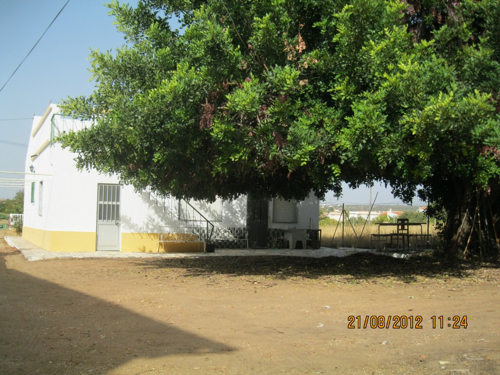

Casa Altura
EnglishLekker weg in de Algarve
In de Algarve , de zuidkust van Portugal , is het heerlijk toeven. Er is een toeristische kant, westelijk van vliegveld Faro en een meer rustige kant, oostelijk van Faro. Aan die rustige kant vindt u Altura. Altura is makkelijk te bereiken via vliegveld Faro, een auto is voor een prikje gehuurd en dan rijdt u er in drie kwartier naar toe.

In Portugal wonen over het algemeen vriendelijke mensen die redelijk Engels spreken. De bevolking is vaak vriendelijk voor toeristen en bereid om te helpen. U voelt zich er snel thuis.
Altura is een kustplaats aan een lang strand langs de Atlantische Oceaan. U kunt kilometers langs het strand lopen of een verfrissende duik in de oceaan nemen. Diverse restaurantjes, supermarkten en winkeltjes zijn in de nabijheid. Grotere plaatsen als Monto Gordo en Villa real de Santo Antonio zijn op fietsafstand. Op zo’n zeven kilometer afstand is de Spaanse grensrivier, die makkelijk over te steken is per veerboot of tolbrug. Een dagje Spanje is een leuke onderbreking in uw vakantie in Portugal.

{kind=link}
Het vakantiehuis ligt zo’n drie kilometer van het strand, net buiten Altura in het dorpje Barrocal. Achter de huizen die aan de straat Rue de Barrocal liggen gaat u rechts naar het huisje tussen de sinaasappelboomgaarden. Er ligt een flink stukje grond omheen en achter het huis staat een grote boom. U zult daar een heerlijk schaduwrijk plekje vinden in hete dagen.
In het huis vindt u naast de woonkamer met airco en satelliettelevisie (Nederlandse zenders) een badkamer met bad, wc, bidet en wastafel. De woonkeuken is volledig toegerust met servies, kookgerei, gasfornuis met oven, koffiezetapparaat, waterkoker, koelkast met vriesvak en een wasmachine.

Er zijn drie slaapkamers, een “kinder”kamer voor drie personen, een slaapkamer met twee lange bedden en een slaapkamer met een lang tweepersoonsbed. In deze laatste kamer is ook een airco ingebouwd.
Over het huis heen is dakterras waar het buiten de hete zomer om heerlijk toeven is en waar u de was kunt drogen.
Er zijn vijf nieuwe fietsen aanwezig, tuinstoelen en twee ligbedden.


Bent u geïnteresseerd? U kunt direct contact met ons opnemen.
Fijne vakantie! Bon Dia!